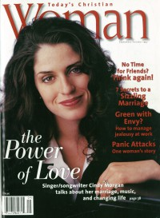

Cindy MorganOn the cover
September 1997
Today's Christian Woman | Media coverage- Apr 1992 in CCM "Artists To Watch - New For '92", by Thom Granger, Brian Quincy Newcomb, Jamie Lee Rake
- Jun 1992 in CCM "Faces: Cindy Morgan", by Thom Granger
- Jul 1993 in The Lighthouse "Cindy Morgan", by J. Warner Soditus
- Jul 1993 in CCM
- Sep 1993 in CCM "More Than Just A Fairy Tale", by April Hefner
- Jan 1994 in Christian Single "Profile: Can Small-Town Values Survive in an Uptown World?", by Deborah Evans Price
- Feb 1995 in CCM "Living Single"
- May 1995 in CCM "Real Life Revisited", by Gregory J. Rumburg
- Nov 1996 in CCM "Suddenly Cindy", by Joan Brasher
- Sep 1997 in Today's Christian Woman "The Power of Love", by Camerin J. Courtney
- Mar 1998 in Today's Christian Woman "Out of The Ordinary", by Camerin J. Courtney
- Mar 1998 in Christian Single "Featured Artist: Cindy Morgan", by Mike Nappa
- Apr 1998 in CCM "The Week That Was", by Dave Urbanski
- Dec 1998 in Church Musician Today "The Metamorphosis of Cindy Morgan", by Betty McLellan Jones
- Jul 2001 in CCM "10 Questions With: Cindy Morgan", by Andy Argyrakis
- Jan 2002 in CCM "Story Behind the Song: I Will Be There", by Marcia Bartenhagen
- Jan 2005 in CCM "List-O-Rama: Look At Me!: Buy My Book", by Chris Well
- Feb 2006 in CCM "Insider: Postcards From The Edge", by David McCreary
- Aug 2006 in CCM "Lead Me On", by Kristi Henson
- Mar 2007 in CCM "List-O-Rama: So Theatrical: 5 Christian Tracks That Get a Little Dramatic", by Chris Well
- Nov 2009 in Christian Single "Connect: Where Are They Now?", by Jennifer McCaman
- Dec 2012 in CCM Digital "Your World: Hymns for Hunger: When Faith and Need Collide", by Matt Conner
- 1 Sep 2015 in CCM Digital "The Heart of a Songwriter: A Conversation with Andrew Greer", by Andrew Greer
Albums & reviews:1995: Under the Waterfall 1997: Listen... The Concert: An Evening With Cindy Morgan [video] 2000: The Best So Far
2010: Hymns & Spirituals: Some Glad Morning Award Summary (Nominations / Wins)
Dove Awards1994 Dove Awards1995 Dove Awards1996 Dove Awards1998 Dove Awards- Long Form Video: Listen... The Concert: An Evening With Cindy Morgan [video]
1999 Dove Awards2000 Dove Awards2008 Dove Awards- Song: "How You Live (Turn Up The Music)"
- Songwriter
Billboard Music Video Awards1997 Billboard Music Video Awards- Best Clip, Contemporary Christian: "The Master's Hand"
Published articles3 articles credited in CCM: 1995 - 2006.1 article credited in Religious Broadcasting: 1997.Books about Cindy Morgan |